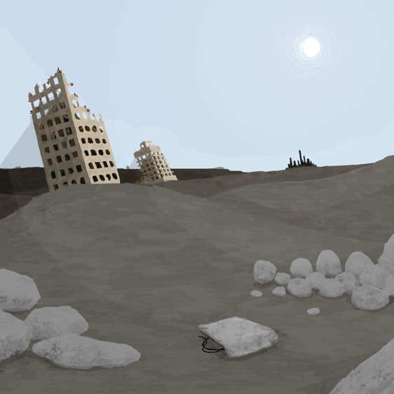
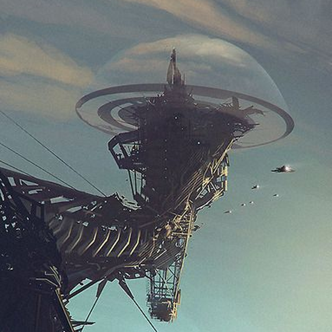
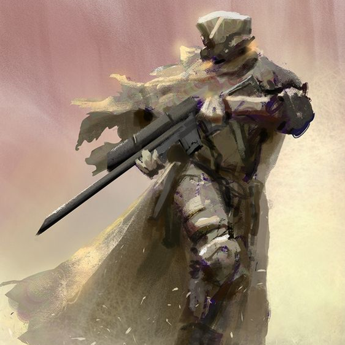

遙遠殘破的未來
西元2318年，地球不再由人類主導，究竟漫長的世紀間發生了什麼事已無從考證，只剩下廢棄城市的殘垣斷瓦隱約訴說著昔日的繁榮與輝煌。在這支離破碎的後末日世界中，失序又分裂的人類如溝鼠般在廢墟中掙扎，除了為生存資源彼此爭鬥以外，他們還得面對更大的問題...


恆生物
基於某些原因，世界上的生物所擁有的基因不再被限制於單個功能，人們稱為基因的「解鎖」，甚至讓細胞擁有獨立思考、不會老化等能力，隨著演化，情況越發不可收拾，終於，出現了即使被解體、壓扁，只要還有一個細胞活著就不會死亡而且擁有智慧的「恆生物」，人們遭受這些生物的反撲，面臨滅亡。
閃蝶系統
在人類文明徹底毀滅之前，由各國政府共同合作研發的人工智慧，目的是在人類面臨滅亡危機時能夠找出解決方法。很顯然的，這項計畫並不順利，但這套系統至今仍維持正常運作，試圖在這些不死生物身上找出存續人類種族的解決辦法。閃蝶建立在高塔上，被設計成能夠永續維持整個系統的運作，直到找到解答的那一天。


探索者
閃蝶系統量產的人型機器人，目的是在世界各地遊走、蒐集研究資料，同時保護毫無反抗能力的人類，利用蝶翼武器系統牽制或捕捉不死生物，持續影響著世界的發展。